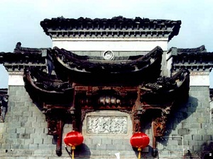
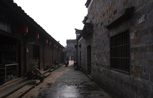
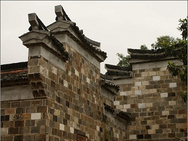
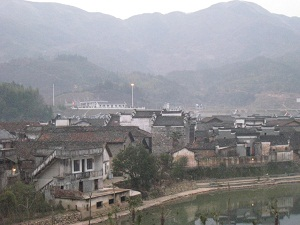
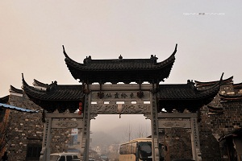
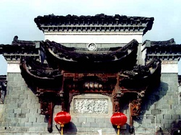
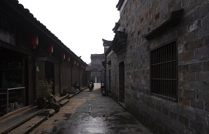
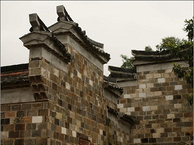
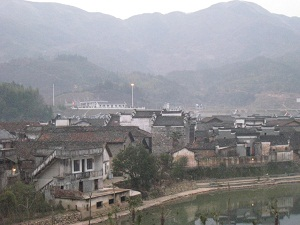
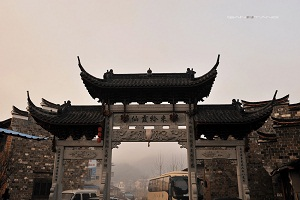

  |
||
  |
||
浙江省江山市廿八都为历史文化名镇，浙江省作家创作基地，地处浙闽赣三省交界，历史上是边区的重要集镇，素有“枫溪锁钥”之称，专家誉此为“文化飞地”，学者称其为“一个遗落在大山里的梦。”
许多人对这座古镇怎么叫“廿八都”感到奇怪。当然，它以前不叫这个名字，古称“道成”。宋朝时在乡以下设都，江山设都四十四，道成地属二十八都，此后就一直沿袭这个名称。在江山市，至今还保留着四都、八都、廿七都、卅二都等地名。